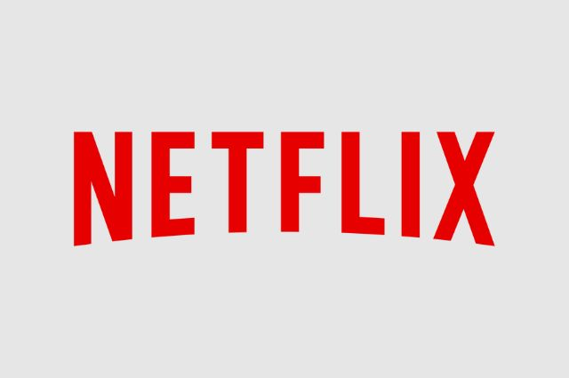
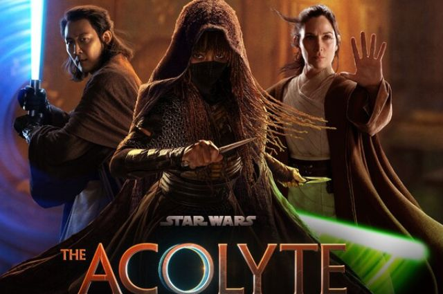

Novas Temporadas!
postado 06/04/2024 Várias sérias aclamadas pela mídia irão receber novas temporadas em 2024, algumas delas são: You, Squid Game, Wednesday, Bridgerton, The Witcher e The Umbrella Academy.
Leia MaisThe Acolyte supera expectativas
postado 08/06/2024 Lançada oficialmente na última quarta-feira (5), Star Wars: The Acolyte já tem o novo recorde da estreia mais assistida da Disney+ em 2024. Segundo um comunicado compartilhado pelo streaming, os dois primeiros episódios da nova saga registraram 4,8 milhões de visualizações no dia em que foram lançados.
Leia Mais